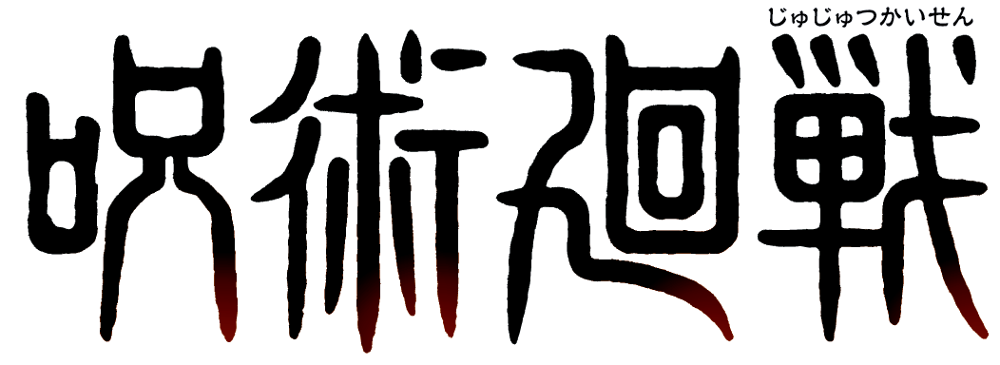
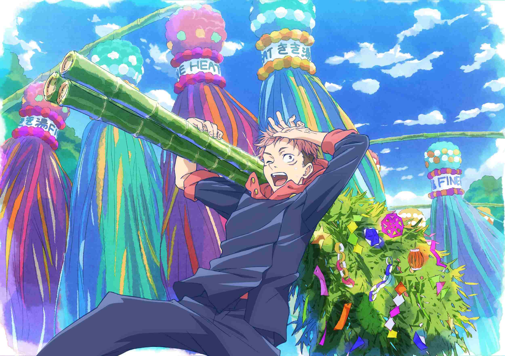
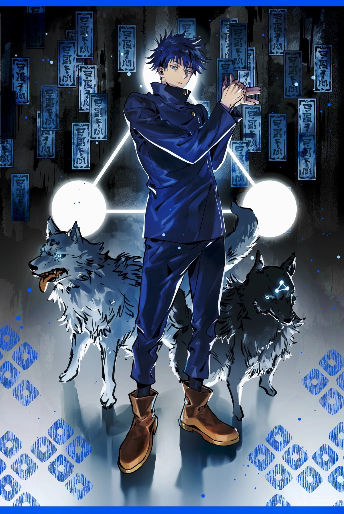
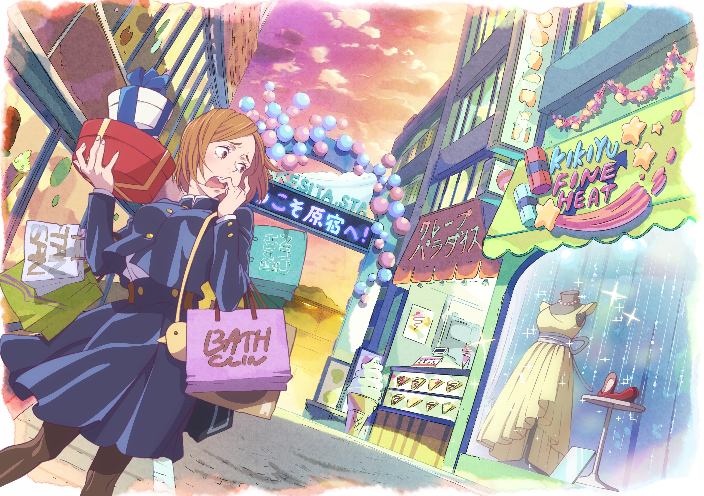

The story of Jujutsu Kaisen is set in a world where Cursed Spirits feed on unsuspecting humans and fragments of the legendary and feared demon Ryomen Sukuna have been lost and scattered about.
Should any curse consume Sukuna's body parts, the power they gain could destroy the world as we know it.
Fortunately, there exists a mysterious school of Jujutsu Sorcerers who exist to protect the precarious existence of the living from the supernatural!

Satoru Gojo is one of the main protagonists of the Jujutsu Kaisen series. He is a special grade jujutsu sorcerer and widely recognized as the strongest in the world. Satoru is the pride of the Gojo Family, the first person to inherit both the Limitless and the Six Eyes in four hundred years. He works as a teacher at the Tokyo Jujutsu High and uses his influence to protect and train strong young allies.

Yuji Itadori is the main protagonist of the Jujutsu Kaisen series. He is the son of Jin Itadori and Kaori Itadori. Yuji is the grandson of Wasuke Itadori who was living a normal life until he encountered Megumi and ate one of Sukuna's fingers. After becoming Sukuna's vessel, Yuji began attending Tokyo Jujutsu High alongside Megumi and Nobara as first-year students.

Megumi Fushiguro is the deuteragonist of the Jujutsu Kaisen series. He is a grade 2 jujutsu sorcerer and first-year student at Tokyo Jujutsu High alongside Yuji Itadori and Nobara Kugisaki. Megumi is the step-brother of Tsumiki Fushiguro and as the son of Toji Fushiguro, Megumi is also a descendant of the Zenin Family. Megumi was born outside the clan as Toji's trump card and was eventually found by Satoru Gojo, who mentored him and enrolled him at Jujutsu High as his student.

Nobara Kugisaki is the tritagonist of the Jujutsu Kaisen series. She is a first-year student and grade 3 jujutsu sorcerer at Tokyo Jujutsu High studying under Satoru Gojo alongside Yuji and Megumi.